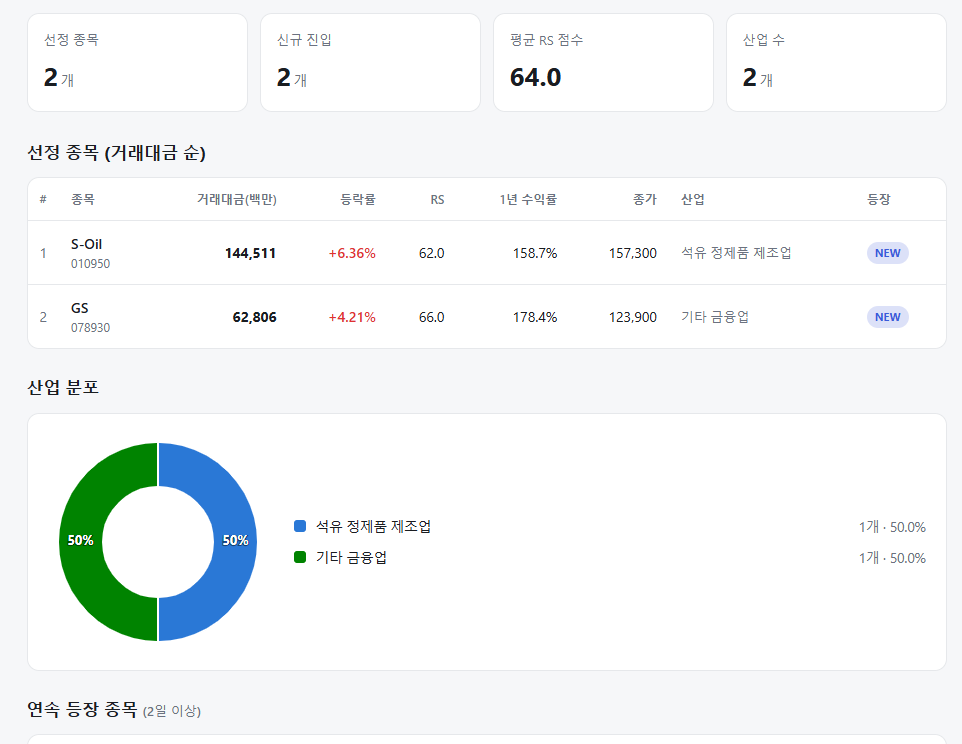
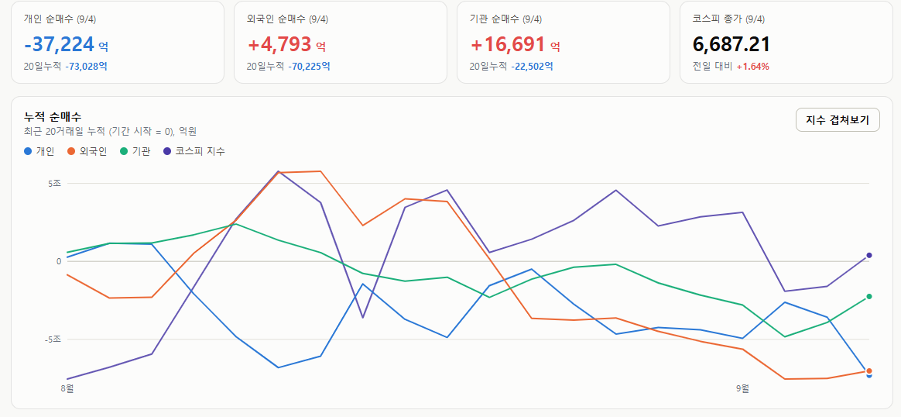

매일의 주도주 정리를 위해 기록합니다.
연속적으로 나온 종목들 또는 상승 후 조정받는 종목 위주로 리서치 해보시면 좋을 것 같습니다.

*오늘의 퀀트픽으로는 S-Oil 입니다.
▶ 2Q26 영업이익 9,650억 원으로 컨센서스 부합 — 정유 부문은 감익했으나 윤활기유 호조가 이를 상쇄했고, 3Q26은 QoQ +12% 증익 및 컨센 38% 상회 전망
▶ 정제마진 강세는 종전 이후에도 장기화된 — 호르무즈발 원유 공급 감소, 중동·러시아 정제설비 파손으로 글로벌 수요의 12~14%에 달하는 생산 차질이 이어져, 유안타는 하반기에만 영업이익 3조 원(연간 5.2조 원, Valero 마진 상회)을 제시
▶ 투자포인트는 OSP 마이너스 전환·윤활기유 이익 확대·배당 확대·샤힌 프로젝트 기대 — "사상 최대 실적 대비 주가는 저평가"라는 평가와 함께, 유가 변동성보다 구조적 shortage와 리레이팅에 주목
#주도섹터
건강관리·신규상장 및 핀테크
스카이랩스가 +135.00% 폭등하며 건강관리기술 업종(+21.80%)과 2026 하반기 신규상장 테마(+15.58%)의 기록적인 수익률을 이끌었습니다.
루닛(+5.14%) 등 의료 AI와 쿠콘(+15.51%) 중심의 지역화폐 테마(+6.74%)로 코스닥 내 고베타 유동성이 강하게 집중되었습니다.
반도체 메가 캡 및 로봇·3D 프린터
삼성전자(+1.80%)와 SK하이닉스(+2.69%)가 글로벌 IB의 긍정적 뷰에 힘입어 지수 상승의 앵커 역할을 수행했습니다.
로보티즈(+22.54%), 케이엔알시스템(+17.84%), 에스피지(+13.13%) 등 로봇 부품주와 3D 프린터 테마(+5.55%)로 전방위적인 성장주 순환매가 일어났습니다.
석유·가스 및 금융 가치주
항공사(+5.89%) 및 석유와가스 업종(+5.26%)이 동반 강세를 기록했습니다.
S-Oil(+6.36%, RS 62.0)과 기타 금융업의 GS(+4.21%, RS 66.0)가 시스템에 신규 진입하며 석유 정제품(50%)과 지주/금융(50%)의 산업 분포를 구성했습니다.
#수급동향

코스피 지수는 +1.64% 상승한 6,687.21로 마감하며 강력한 반등 탄력을 보여주었습니다. 코스닥 지수는 +2.95% 상승한 813.50으로 장을 마쳤습니다.
유가증권시장에서 기관 투자자가 1조 6,691억 원, 외국인 투자자가 4,793억 원을 동반 순매수하며 지수 상승을 강하게 견인했습니다. 반면 개인 투자자는 3조 7,225억 원을 대거 순매도하며 지수 반등 국면에서 차익 실현 및 물량 축소에 나섰습니다.
같은 자사주 매입, 다른 시장 반응 — 삼성전자와 SK하이닉스가 보여준 것
SK하이닉스와 삼성전자가 대규모 자사주 매입에 나선 지 약 2주가 지났습니다. 두 회사 모두 큰 규모의 매입을 시작했지만, 시장 반응은 꽤 달랐습니다. SK하이닉스는 매입 후 전량 소각을 발표한 반면, 삼성전자는 15조 원 규모 자사주를 임직원 보상 목적으로 활용하기로 했기 때문입니다.
① 현재 얼마나 샀을까
9월 3일 공시 기준으로 두 회사 모두 예상보다 빠른 속도입니다.
SK하이닉스는 40조 원, 2,407만 주(발행주식의 3.3%)를 11월 19일까지 매입해 전량 소각할 계획입니다. 9월 3일까지 약 715만 주(29.7%), 누적 12조 원을 매입했고 평균 단가는 167만 8천 원입니다. 최근 하루 65만 주씩 꾸준히 사고 있습니다.
삼성전자는 15조 원, 5,328만 주 규모로, 9월 3일까지 약 1,780만 주(33.4%), 누적 4조 5,800억 원을 매입했습니다. 평균 단가는 25만 7천 원입니다.
물량 기준 진행률은 삼성전자가 조금 빠릅니다. 다만 결정적 차이는 매입 이후입니다. 하나는 없애고, 하나는 직원에게 줍니다.
② 발표 직후 주가는 정반대였다
SK하이닉스는 8월 19일 정규장에서 9.75% 급락한 뒤 장 마감 후 자사주 매입·소각을 발표했습니다. 다음 날 주가는 12.73% 급등, 이튿날도 2.31% 올랐습니다.
삼성전자는 8월 20일 기대감으로 9.49% 상승했지만, 정책이 발표된 뒤 첫 거래일인 24일에는 8.70% 급락했습니다. 기대로 오른 만큼 발표 후 '셀온'이 나타난 셈입니다.
③ 왜 달랐을까 — 세 가지 차이
첫째, 소각 여부.소각은 발행주식 수 자체를 줄여 EPS와 기존 주주의 지분가치를 높입니다. 반면 임직원 보상용 자사주는 주식 수를 영구히 줄이지 않고, 지급된 주식 일부가 다시 시장으로 돌아올 수도 있습니다. 시장은 둘을 같은 매입으로 보지 않습니다.
둘째, 정책의 명확성. SK하이닉스는 향후 3년간 FCF의 50% 이상을 환원하겠다는 방향을 제시했습니다. 삼성전자는 90~110조 원이라는 큰 숫자를 냈지만, 30조 원 배당 외 나머지 방식은 내년 1월 이사회에서 결정합니다. 숫자는 크지만 방식이 미정이라는 차이입니다.
셋째, 기대감의 높이. 삼성전자는 발표 전 이미 기대가 잔뜩 높아져 있었고, SK하이닉스는 급락한 상황에서 발표가 나왔습니다. 같은 정책이라도 기대를 넘느냐, 못 미치느냐에 따라 반응은 갈립니다.
④ 자사주 매입만으로 주가는 안 움직인다
8월 한 달간 외국인은 SK하이닉스를 7조 596억 원 순매도했습니다. 회사가 매일 사도 외국인이 더 팔면 주가는 눌립니다. 실제로 9월 4일 SK하이닉스 종가는 164만 7천 원으로 8월 21일(173만 원)보다 낮고, 삼성전자도 25만 5,500원으로 28만 1,500원에서 내려왔습니다.
즉 지금까지 자사주 매입은 주가를 끌어올렸다기보다 강한 매도 물량을 흡수하고 하단을 지지하는 역할을 하고 있습니다.
⑤ 지금부터가 더 중요하다
SK하이닉스는 약 28조 원, 1,692만 주의 매입 여력이 남아 있습니다. 지금 속도라면 11월 19일보다 훨씬 빨리 끝날 수 있습니다. 여기서 새 변수가 생깁니다. 매입이 끝나는 순간 이 구조적 매수세도 사라집니다. 그래서 앞으로 봐야 할 건 "얼마나 샀는가"보다 "매입이 끝난 뒤 누가 그 물량을 받아줄 것인가"입니다.
가장 좋은 조합은 자사주 매입 + 외국인 순매수가 동시에 나타나는 것입니다. 반대로 외국인 대량 매도가 계속되면 회사의 매수는 그 매물을 받아주는 데 소진됩니다. 반도체 대형주는 외국인 비중이 높아 이 수급이 특히 중요합니다.
증권사 시각도 갈리기 시작했습니다. LS증권은 HBM4 수율 개선을 반영해 삼성전자 목표가를 40만→45만 원으로 올린 반면, SK하이닉스는 330만→240만 원으로 낮췄습니다. 삼성의 HBM 경쟁력 회복이 하이닉스의 높은 수익성을 일부 잠식할 수 있다는 판단입니다. 자사주라는 수급 이벤트가 지나면, 관심은 결국 HBM4 경쟁력, D램 가격, 이익 성장률로 돌아갑니다.
두 사례가 보여주듯 자사주 매입은 '얼마나 사느냐'만으로 평가할 수 없습니다. 소각 여부, 정책의 명확성, 발표 전 기대 수준이 함께 작용하고, 여기에 외국인 수급과 실적 전망까지 봐야 합니다.
지금부터 가장 중요한 두 가지는 이겁니다. 자사주 매입과 외국인 수급이 동시에 순매수로 바뀌는지, 그리고 매입이 끝난 뒤에도 주가를 받아줄 새 매수 주체가 나타나는지. 자사주 매입은 엔진이 아니라 안전판입니다. 그 위에서 주가를 실제로 올리는 힘은 결국 실적과 외국인 수급에서 나옵니다.
이번 한주도 수고많으셨습니다.
즐거운 주말 보내세요:)